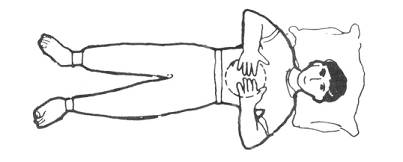
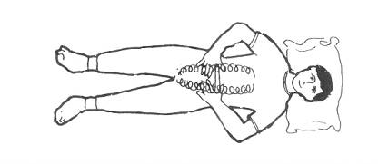
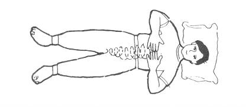
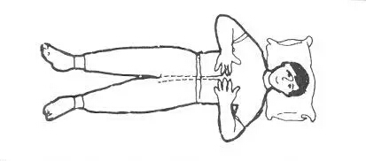
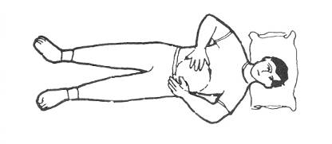
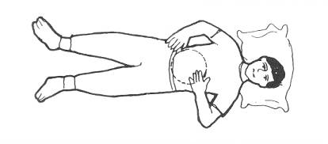
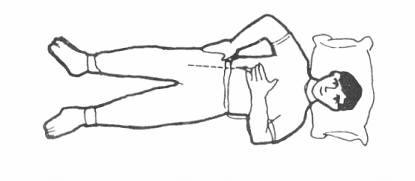
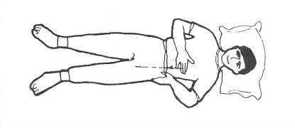
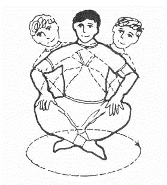

仙人揉腹术
据记载，唐代名医孙思邈常以“食后行百步，常以手摩腹”作为养生方法。中医认为腹部里有五脏六腑，被喻为“五脏六腑之宫城，阴阳气血之发源”，揉腹可以调整阴阳，充实脏腑，促进气血运化；西医认为揉腹可增加腹肌的血流量循环，增强肠胃蠕动。
- 
按揉心窝部
两手中三指相接并按在心窝部位（胸骨下缘柔软的部位），按右上左下顺时针方向做圆周运动，按摩21次。再反向按摩21次
- 

回环按摩腹中线及腹两侧
用两手中间三指从心窝向下顺时针揉，边揉边向下走，揉至脐下耻骨处；两手中三指从耻骨处分别向右边揉，边揉边走，揉至心窝处两手汇合。循环做21次
- 
推按腹中线部位
以两手中三指相接，由心窝腹中线部位推下，直至耻骨联合处，共21次
- 

左右手按脐腹按摩
以左手由左上右下逆时针绕肚脐摩腹21次;以右手由右上左下顺时针绕肚脐摩腹21次
- 

推按左右侧胸腹
左手做叉腰状，置左边胁下腰肾处，大指向前，四指托后，轻轻捏住；右手中三指按在左乳下方部位，然后以此为起点，直推至左侧大腿根处，连续推按 21 次。右手对称连续推按 21 次。
- 
盘坐摇转
盘坐势，先自左向前、向右、向后、按顺时针方向摇转 21 次；然后自右向前、向左、向后、做逆时针方向摇转 21 次。